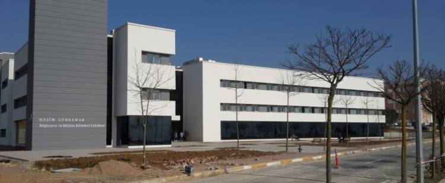

Ben YASİN Çakır Bu sayfada sizlere kendimi tanıtacağim.
Sakarya Üniversitesi Bilgisayar Mühendisligi Bölümünde ögrenciyim.
2002 senesinde Gaziantepte doğdum
Renkli renkli evleri, görkemli kiliseleri, muazzam görüntüdeki kanalları ve de manzara eşliğinde sürülen sandal keyfi ile Venedik, Dünya'da kendine has mekanlardan bir tanesidir. Burada müthiş fotoğraflar çektirebilir, şarapları tadabilir, sandal sefası sürebilir ve Venedik sokaklarında dolaşabilirsiniz.
Aurora kelimesi mitolojik bir öge ve Roma mitolojisine göre Aurora, bir Şafak Tanrıçası. Kelime anlamı ise gün doğumu ve latince bir kelime. Borealis kelimesi Yunanca'da kuzey rüzgarı, Australis ise güney rüzgarı demek. Kuzey ışıkları, yeryüzünün sahip olduğu manyetik alanla Güneş'ten Dünya'ya ulaşan enerji yüklü parçacıkların girdiği etkileşim sonucu ortaya çıkan ışımalara verilen isimdir.
Mısır Piramitleri, Mısır'da yer alan piramit şeklindeki yapılardır. Mısır'da 100'den fazla piramit vardır. Piramitlerin çoğu Eski Krallık Dönemi'nden Orta Krallık Dönemi'ne kadar hüküm süren firavunların mezarları olarak inşa edilmiştir. Bilinen en eski piramit 3. Hanedan döneminde inşa edilen Zoser Piramididir.
20 Haziran 1946 yılında Konya’da doğan yazarın gerçek adı Ömer Zülfü Livaneli’dir. Küçük yaşlarından itibaren müziğe ilgi duymaya başladı ve saz çalmayı öğrendi. Zülfü Livaneli’nin şarkıları edebiyat ve şiirle iç içe geçmiştir. Nazım Hikmet, Orhan Veli, Yaşar Kemal, Bedri Rahmi Eyüboğlu, Sabahattin Ali ve Ataol Behramoğlu’nun şiirlerini şarkı yapmıştır. Müzisyen kimliğinin yanı sıra deneme, hikaye ve roman da yazmıştır.
Orhan Kemal 15 Eylül 1914 yılında Adana Ceyhan'da doğmuştur. Toplumsal gerçekçi roman türünün öncülerindedir. Gerçek ismi Mehmet Raşit Öğütçü'dür. Adı, Türk edebiyatının büyük ustaları arasında anılan yazar; roman, hikâye, oyun, şiir gibi farklı tarzlarda birçok esere imza atmış olsa da daha çok romancılık yönü ile tanınmıştır.
Stefan Zweig (28 Kasım 1881 - 22 Şubat 1942), Avusturya-Macaristanlı roman, oyun, biyografi yazarı ve gazeteciydi. 1920'ler ile 1930'lar arasında edebiyat kariyerinin zirvesinde olmuş Zweig, dönemin dünyasının en çok tercüme edilen ve en popüler yazarlarından biriydi
Amerikan Edebiyatının en önemli isimlerinden biri olan Ernest Miller Hemingway; 21 Temmuz 1899 tarihinde Illinois- Oak Parkta dünyaya gelmiştir. Hemingway, çocukluk döneminde bir müzisyen olan annesinden müzik eğitimi almıştır. Yazmaya henüz lise çağında başlayan Hemingway, okul gazetesinden yazılarını yayımlamıştır. Basit yazma tekniği ve sade üslubuyla 20. yüzyıl kurgu romancılığını etkilemiştir. Nobel ve Pulitzer Ödülü sahibi yazarın çoğu eseri, bugün Amerikan edebiyatının başyapıtlarından kabul edilir.
Amin Maalouf ya da Emin Maluf, 25 Şubat 1949 Beyrut doğumlu, kitaplarını Fransızca yazan Lübnanlı yazar. 1976'dan beri Fransa'da yaşamaktadır. Yazar 1993 yılında Goncourt Akademisi Edebiyat Ödülüne layık görülmüştür. Kitapları 40'tan fazla dile çevrilmiş, eserleri Fransa'da ve çevrildiği birçok dilde geniş okur kitlesine ulaşmıştır.
Yakup Kadri Karaosmanoğlu (27 Mart 1889, Kahire - 13 Aralık 1974, Ankara), Türk yazar ve diplomat. Roman, öykü ve makaleleri ile Türk toplumunun Tanzimat'tan bu yana geçirdiği değişiklikleri anlatmış bir yazardır. Asıl ününü romanları ile saglamıştır